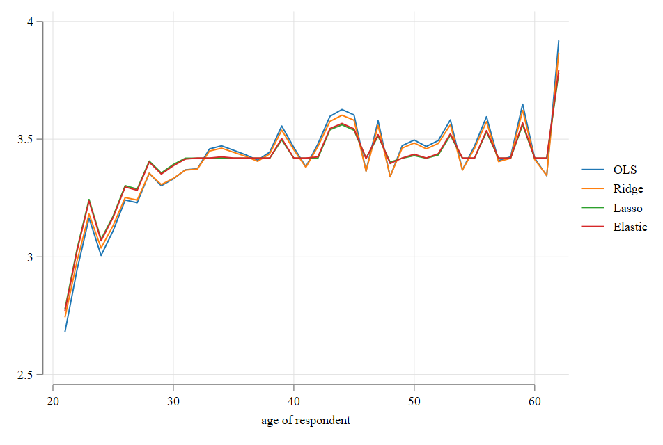

Linear Regression Model
Statistical Inference and Extensions
Introduction
Linear Regression (usually estimated via OLS) is the most basic, and still most useful, tool for analyzing data.
The goal is to find what the relationship between the outcome \(y\) and explanatory variables \(X's\) is.
Say that we start with a very simple “model” that states tries to describe the population function as the following:
\[ y = h(X,\varepsilon) \]
Here, \(X\) represents a set of observed covariates and \(\varepsilon\) the set of unobserved characteristics, and for now, we assume that there is no pre-define relationship between these components.
- For now, we will make standard exogeneity assumptions for the identification of the model
Estimation
- The functional form, however, is unknowable. However, under the small assumption that \(X\) and \(\varepsilon\) are unrelated, if we would have access to the population data, we could instead consider the Conditional Expectation function (CEF):
\[ E(y_i|X_i=x) = \int t f_y(t|X_i=x)dx \]
Notice that this implies a fully non-parametric estimation of the Linear function (because it does not impose any functional form).
With this, we can “decompose” the outcome \(y\) into two components, one that depends on observation characteristics (CEF) and one that depends on the error \(\varepsilon\).
\[ y = E(y|X) + \varepsilon \]
- This has the nice property that the error is unrelated to any functional form of \(X\), while providing a summary of the relationship between \(X\) and \(y\).
The CEF is a convenient abstract, but to estimate it, we require assumptions. (Recall the assumptions for unbiased OLS?)
Namely, we need to impose a linearity assumption, namely:
\[ E(y_i|X_i=x) = \beta_0 + \beta_1 x_1 +\beta_2 x_2 + ... + \beta_k x_k = X_i'\beta \]
And the solution for \(\beta\) is given by:
\[ \beta = \underset{b}{arg} \ E(L(y_i-X'_i b)) \]
Where the loss function \(L(x)=x^2\). (Square loss function)
This implies the following condition:
\[ E[X_i (y_i-X_i'b)]=0 \rightarrow \beta = E[X_i'X_i]^{-1}E[X_i'y_i] \]
- This population terms must be substituted by the sample equivalent: \(E(X_i) =\frac{1}{N} \sum_i^NX_i\)
Mata: OLS Estimator
The estimator using Sample equivalents become:
\[ \hat \beta = \left(\frac{1}{N} \sum_i X_i'X_i \right)^{-1} \frac{1}{N} \sum_i X_i'y_i=(X'X)^{-1}X'y \]
Inference - Distribution of \(\beta's\)
so: \[ y = X\beta + \varepsilon \\ \sqrt N (\hat\beta - \beta) =\frac{1}{N}\Big[\sum (X_iX_i')\Big]^{-1} \frac{1}{\sqrt N} \sum(X_i\varepsilon_i) \]
Here \(\varepsilon\) is the true population error. \(\hat\beta\) is unbiased if the second term has an expectation of Zero. (the error is independent from \(X\)).
Asymptotically, the first term is assumed fixed \(E(X_i X_i')\). And, because \(E(X_i\varepsilon)=0\), and \(\frac{1}{\sqrt N} \sum(X_i\varepsilon)\) is normalized, by CLT we have that:
\[ \sqrt N (\hat\beta-\beta)\sim N(0,E(X_iX_i')^{-1} \ E(X_iX_i'\varepsilon ^2) \ E(X_iX_i')^{-1} ) \]
- From here, the main question is : How do we estimate \(E(X_iX'\varepsilon_i^2)\)?
Inference: Estimating SE
- Lets First Rewrite the last expression:
\[ Var(\hat\beta)=(X'X)^{-1} X'\Omega X (X'X)^{-1} \]
where:
\[ \Omega= \left( \begin{matrix} \sigma_1^2 & \sigma_{12} & ... & \sigma_{1N}\\ \sigma_{21} & \sigma_{2}^2 & ... & \sigma_{2N} \\ ...&...&...&...\\ \sigma_{N1} & \sigma_{N2} & ... & \sigma_{NN}^2 \\ \end{matrix} \right) \]
In other words, the variance of \(\hat\beta\) allows for arbitrary relationship among the errors, as well as heteroskedasticity. This, however is impossible to estimate!, thus we require assumptions
Homoskedasticity and independent samples
The easiest route is to assume homoskedastic errors \(\sigma^2 = \sigma_i^2 \ \forall i \in 1,...,N\) . (the error is spread equally around the mean)
With independent samples \(\sigma_{ij}=0 \ \forall \ i\neq j\) . (A persons unobserved is completely independent from anybody else)
\[ \Omega_00= \left( \begin{matrix} \sigma_1^2 & \sigma_{12} & ... & \sigma_{1N}\\ \sigma_{21} & \sigma_{2}^2 & ... & \sigma_{2N} \\ ...&...&...&...\\ \sigma_{N1} & \sigma_{N2} & ... & \sigma_{NN}^2 \\ \end{matrix} \right)=I(N)*\sigma^2 \]
Thus \[ Var(\hat\beta)_{00}=(X'X)^{-1} X'I(N)\sigma^2 X (X'X)^{-1}=\sigma^2 (X'X)^{-1} \\ \sigma^2 = E(\varepsilon^2) \]
But, \(\sigma^2\) is not known, so we have to use \(\hat\sigma^2\) instead, which depends on the sample residuals: \[\hat\sigma^2 = \frac{1}{N-k-1}\sum \hat e^2 \] Where we account for the fact true errors are not observed, but rather residuals are estimated, adjusting the degrees of freedom.
Lifting Assumptions: Heteroscedasticity
- We start by lifting this assumption, which implies the following:
\[ \sigma^2_i \neq \sigma^2_j \ \forall \ i\neq j \] But to estimate this, we need an approximation for \(\sigma^2_i = E(\varepsilon_i^2) = \varepsilon_i^2\).
- With this, we can obtain what is known as th White or Eicker-White or Heteroskedasiticy Robust Standard errors.
\[
Var(\hat\beta)_{0} = (X'X)^{-1} (X\hat e)'(\hat eX) (X'X)^{-1} \\
=(X'X)^{-1} \sum(X_iX_i'\hat e^2) (X'X)^{-1}
\] Which imposes NO penalty to the fact that we are using residuals not errors. If we account for that however, we obtain what is known as HC1, SE, the standard in stata. (when you type robust) \[
Var(\hat\beta)_{1}=\frac{N}{N-K-1}Var(\hat\beta)_{0}
\]
But error is not the same as residual!
A residual is model dependent, and should not be confused with the model error \(\hat \varepsilon \neq \varepsilon\). Because of this, additional corrections are needed to obtained unbiased \(var(\hat\beta)\) estimates. (Degrees of freedom). But other options exists.
Redefine the Variance Formula:
\[ Var(\hat\beta)=(X'X)^{-1} (\sum X_iX_i \psi_i ) (X'X)^{-1} \] From here Mackinnon and White (1985) suggest few other options: \[ \begin{matrix} HC0: \psi_i = \hat e^2 & HC1: \psi_i = \frac{N}{N-K} \hat e^2 \\ HC2: \psi_i = \hat e^2 \frac{1}{1-h_{ii}} & HC3: \psi_i = \hat e^2 \frac{1}{(1-h_{ii})^2} \end{matrix} \] Where \(h_{ii}\) is the ith diagonal element of \(X(X'X)^{-1}X'\) and allows you to see how dependent a model is to a single observation.
HC2 and HC3 Standard errors are better than HC1 SE, specially when Samples are small.
NOTE: this \(h_{ii}\) element is also used to measure the degrees of freedom of a model. Sum it up, and you will see!.
Coding Robust SE
// h = diagonal(X invsym(X'x) X') Wrong Way, too many calculations
h = rowsum(x*invsym(x'x):*x)
psi0 = e:^2 ; psi1 = e:^2*N/(N-k)
psi2 = e:^2:/(1:-h) ; psi3 = e:^2:/((1:-h):^2)
var_b_0 = ixx * cross(x,psi0,x) * ixx
var_b_1 = ixx * cross(x,psi1,x) * ixx
var_b_2 = ixx * cross(x,psi2,x) * ixx
var_b_3 = ixx * cross(x,psi3,x) * ixx
b,sqrt(diagonal(var_b_0)),sqrt(diagonal(var_b_1)),
sqrt(diagonal(var_b_2)),sqrt(diagonal(var_b_3))Or in Stata:
Lifting Even more Assumptions: Correlation
One assumption we barely consider last semester was the possibility that errors could be correlated within groups. (except for time series and serial correlation)
For example, families may share similar unobserved factors, So would people interviewed from the same classroom, cohort, city, etc. There could be many dimensions to consider possible correlations!
In that situation, we may be missmeasuring the magnitude of the errors (probably downward), because the \(\Omega\) is no longer diagonal: \(\sigma_{ij} \neq 0\) for some \(i\neq j\).
- But, estimate all parameters in an NxN matrix is unfeasible. We need assumptions!
Say we have \(G\) groups \(g=(1…G)\) . We can rewrite the expression for \(\hat\beta\) as follows:
\[ \hat\beta-\beta = (X'X)^{-1}\sum_{g=1}^G X'_g \varepsilon_g= (X'X)^{-1}\sum_{g=1}^G s_g \]
- We can assume that individuals are correlated within groups \(E(s_g's_g) =\Sigma_g\) , but they are uncorrelated across groups \(E(s_g s'_{g')=0 \ \forall \ g \neq g'\) .
- These groups are typically known as “clusters”
Addressing Correlation
- The idea of correcting for clusters is pretty simple. We just need to come up with an estimator for \(\Sigma_g\) for every cluster, so that:
\[Var(\hat\beta) = (X'X)^{-1} \left( \sum_{g=1}^N \Sigma_g \right) (X'X)^{-1} \\ \Sigma_g = E( X_g' \Omega_g X_g) \]
Here \(\Omega_g\) should be an approximation of the variance covariance matrix among the errors of ALL individuals that belong to the same cluster. But how do we approximate it?
As with the EW - HC standard errors, there are many ways to estimate Clustered Standard errors. See MacKinnon et al (2023) for reference. We will refer only to the simpler ones CV0 and CV1.
Still How?
- Recall we approximate \(\sigma^2_i\) with \(\varepsilon_i^2\). Then we can approximate \(\sigma_{ij}\) with \(\varepsilon_j \varepsilon_i\). More specifically:
\[ \Omega_g \simeq \varepsilon \varepsilon' \ or \ \Sigma_g = X'_g \varepsilon \varepsilon' X_g = (X'_g \varepsilon) (\varepsilon' X_g) \]
- Change \(\varepsilon\) with \(\hat\varepsilon\), do that for every group, and done! (almost).
- As mentioned earlier, there are many CCSE (clustered consistent SE).
\[ CV_0 = (X'X)^{-1} \sum_{g=1}^G \hat \Sigma_g (X'X)^{-1} \\ CV_1 = \frac{G(N-1)}{(G-1)(N-k-1)}(X'X)^{-1} \sum_{g=1}^G \hat \Sigma_g (X'X)^{-1} \]
- Similar to HC. CV0 does not correct for degrees of freedom. CV1, however, accounts for Degrees of freedom in the model, and clusters.
// 1st Sort Data (easier in Stata rather than Mata) and reload
y = st_data(.,"lnwage"); x = st_data(.,"educ exper female"),J(1434,1,1) ; cvar= st_data(.,"isco")
e = y:-x*b
// Set the panel info
info = panelsetup(cvar,1); g=rows(info); n=rows(y)
// get X_g'e for all groups:
s_xg_e = panelsum(x:*e,info)
// Sum Sigma_g
sigma_g = s_xg_e's_xg_e
cv0 = ixx*sigma_g*ixx
cv1 =g/(g-1)*(n-1)/(n-k)*ixx*sigma_g*ixx
b,sqrt(diagonal(cv0)),sqrt(diagonal(cv1))or compare it to
Beware of over-clustering
While clustering helps address a problem of “intragroup” correlation, it can/should be done with care. It is important to be aware about some unintended problems of using Correlation.
CV0 and CV1 work well when you have a large number of Clusters. How many? MHE(2009) says…42 (this is like having large enough samples for Asymptotic variance). If # clusters are small, you would do better with other approaches (including CV2 and CV3).
When you cluster your standard errors, you will “most-likely” generate larger standard errors in your model. Standard recommendation (MHE) is to cluster at the level that makes sense (based on data) and produces largest SE (to be conservative).

Standard Errors
You may also consider that clustering does not work well when sample sizes within cluster are to diverse (micro vs macro clusters)
And there is the case where clustering is required among multiple dimensions (see
vcemway). Where the unobserved correlation could be present in different dimensions.
So what to cluster and how?
Mackinnon et al (2023) provides a guide on how and when to cluster your standard errors. (some are quite advanced)
General practice, At least use Robust SE (HC2 or HC3 if sample is small), but use clustered SE for robustness.
You may want to cluster SE based on some theoretical expectations. Choose -broader- groups for conservative analysis.
In treatment-causal effect analysis, you may want to cluster at the “treatment” level.
But…Beyond hc0/1 and CV0/1 there is not much out there for correcting Standard errors in nonlinear models.
The Bootstrap
If you can‚Äôt Sandwich ü•™, you can re-Sample
The discussion above refereed to the estimation of SE using \(Math\). In other words, it was based on the asymptotic properties of the data. Which may not work in small samples.
An alternative, often used by practitioners, is using re-sampling methods to obtain approximations to the coefficient distributions of interest.
But‚Ķ How does it work?ü§î
First ask yourself, how does Asymptotic theory work (and econometrics)? üò±
Note: I recommend reading the -simulation- chapter in The effect, and simulation methods chapter in CT.
A Brief Review‚Ķagain üòá
If I were to summarize most of the methodologies (ok all) we used last semester, and this one, the properties that have been derived and proofed are based on the assumption that we “could” always get more data (frequentist approach).
There is population (or supper population) from where we can get samples of data.
We get a sample (\(y,X\)) (of size N)
Estimate our model :
method(\(y,X\))\(\rightarrow\) \(\beta's\)Repeat to infinitum
Collect all \(\beta's\) and summarize. (Mean and Standard deviations)
Done.
The distributions you get from the above exercise should be the same as what your estimation method produces. (if not, there there is something wrong with the estimation method)
But we only get 1 Sample!
The truth is we do not have access to multiple samples. Getting more data, is in fact, very expensive. So what to do ?
Rely on Asymptotic theory
learn Bayesian Econometrics ü•∫
or-resample? and do Bootstrap!
Basic idea of Bootstrapping
In the ideal scenario, you get multiple samples from your population, Estimate parameters, and done.
If not possible you do the next best thing. You get your sample (assume is your mini-population),
Draw subsamples of same size (with replacement) (\(y_i^s,X_i^s\))
estimate your model and obtain parameters \(\beta^s_i\)
Summarize those parameters‚Ķand done, you get \(Var(\hat\beta)\) for üÜì. (or is it?)
Bootstrapping
- üë¢Bootstrapping is a methodology that allows you to obtain empirical estimations of standard errors making use of the data in hand, and without even knowing about Asymptotic theory (other than how to get means and variances).
Bootstrap Sample
- And of course, it comes in different flavors.
Bootstrap Types:
Non-parametric Bootstrap: You draw subsamples from the main sample. Each observation has the same pr of being selected.
Easiest to implement (
see bootstrap:)Works in almost all cases, but you may have situations when some covariates are rare.
Can be extended to allow “clusters” using “block bootstrapping”. Works best if re-sampling “follows” the same sampling structure as your sample.
Parametric Bootstrap: You estimate your model, make assumptions of your model error.
You need to implement it on your own. \(y^s=x\hat b+\tilde e\) for \(\tilde e \sim f(\hat \theta)\)
It will not work well if the assumptions of the error modeling are wrong.
Residual bootstrap: Estimate your model, obtain residuals. Re-sample residuals
- Again, implement it on your own. \(y^s = x\hat b+\tilde e\) for \(\tilde e \sim {\hat e_1 , ... , \hat e_N}\)
- It depends even more on the assumptions of the error modeling.
UWild bootstrap: Estimate your model, obtain residuals, and re-sample residual weights.
Again…on your own: \(y^s = x\hat b +\hat e * v\) , where \(v \sim ff()\) where \(ff()\) is a “good” distribution function. \(E(v)=0 \ \& \ Var(v)=1\)
Actually quite flexible, and works well under heteroskedasticity!
It can also allow clustered standard errors. The error \(v\) no longer changes by individual, but by group. It also works well with weights.
UWild bootstrap-2 : Estimate your model, obtain Influence functions üò± , and re-sample residual weights.
- This is an extension to the previous option. But with advantages
you do not need to -reestimate- the model. Just look into how the the mean of IF’s change.
it can be applied to linear and nonlinear model (if you know how to build the IF’s)
- Works well with clustered and weights.
- This is an extension to the previous option. But with advantages
CWild bootstrap: Similar UWild Bootstrap, Obtain Influence functions under the Null (imposing restrictions), and use that to test the NULL.
No, you do not need to do it on your own.
see bootestinStata.Works pretty well with small samples and small # clusters. Probably the way to go if you really care about Standard errors.
How to Bootstrap? in Stata
I have a few notes on Bootstrapping here Bootstrapping in Stata. But let me give you the highlights for the most general case.
Most (if not all commands) in
Stataallow you to obtain bootstrap standard errors, by default. see:help [cmd]they usually have the following syntax:
However, you can also Bootstrap that commands that do not have their own
bootstrapoption.
This last command may allow you to bootstrap multiple models at the same time, although it does require a bit of programming. (and a do file)
gen tchild = kids6 + kids714 program bs_wages_children, eclass // eclass is for things like equations ** Estimate first model reg lnwage educ exper female matrix b1 = e(b) matrix coleq b1 = lnwage ** Estimate second model reg tchild educ exper female matrix b2 = e(b) matrix coleq b2 = tchild ** Put things together and post matrix b = b1 , b2 ereturn post b end gen tchild = kids6 + kids714 . bootstrap: bs_wages_children (running bs_wages_children on estimation sample) warning: ... Bootstrap replications (50) ----+--- 1 ---+--- 2 ---+--- 3 ---+--- 4 ---+--- 5 .................................................. 50 Bootstrap results Number of obs = 1,434 Replications = 50 ------------------------------------------------------------------------------ | Observed Bootstrap Normal-based | coefficient std. err. z P>|z| [95% conf. interval] -------------+---------------------------------------------------------------- lnwage | educ | .0858252 .0064645 13.28 0.000 .073155 .0984954 exper | .0147343 .0015455 9.53 0.000 .0117051 .0177635 female | -.0949227 .0228663 -4.15 0.000 -.1397399 -.0501056 _cons | 2.21885 .0910609 24.37 0.000 2.040374 2.397326 -------------+---------------------------------------------------------------- tchild | educ | .0177854 .0088262 2.02 0.044 .0004863 .0350844 exper | -.0047747 .0019204 -2.49 0.013 -.0085386 -.0010108 female | -.1306332 .0477117 -2.74 0.006 -.2241464 -.03712 _cons | .4163459 .1036883 4.02 0.000 .2131206 .6195712 ------------------------------------------------------------------------------
Why does it matter? because you may want to test coefficients individually, or across models. This is only possible if the FULL system is estimated jointly
Final words on Bootstrap:
So bootstrap (and its many flavors) are convenient approaches to estimate standard errors and elaborate statistical Inference, but its not infallible.
- If the re-sampling process does not simulate the true sampling design, we may miss important information when constructing SE.
- When the parameters are estimated using “hard” cutoffs or restricted distributions, it may not produce good approximations for SE.
- You usually require MANY repetitions (standard = 50, but you probably want 999 or more). The more the better, but has some computational costs. (specially simple bs)
- Some methods play better with weighted samples, clusters, and other survey designs than others. And some require more know-how than others.
So choose your üî´weapon wisely!
Small Diversion ü¶å: The Delta Method
Variance of nonlinear functions
Some times (perhaps not with simple OLS) you many need to estimate Standard errors for transformations of your main coefficient of interest, or combinations of those coefficients.
Say that you estimated \(\theta \sim N(\mu_\theta, \sigma^2_\theta)\) but are interested in the distribution of \(g(\theta)\). How do you do this?
Two options:
- you re estimate \(g(\theta\)) instead, or
- you make an approximation, using the Delta Method
How does it work?
The Delta method uses the linear approximations to approximate the distribution of otherwise not known distributions.
Further, It relies on the fact that linear transformations a normal distribution, is on itself normal. For example:
\[ g(\hat \theta) \simeq g(\theta) + g'(\hat\theta) (\hat \theta-\theta) \]
This states that the nonlinear function \(g(\theta)\) can be “locally” approximated as a linear function in the neighborhood of \(g(\theta)\).
Predictions above or below are approximated using the slope of the function. \(g'(\theta)\).
So, if we take the variance, we get:
\[ Var(g(\hat \theta)) \simeq Var \left(g(\theta)+ g'(\hat\theta) (\hat \theta-\theta)\right) =g'(\hat\theta)^2 Var(\theta) \]
Delta Method: Visualization

It can go multivariate as well:
\[ g(\hat \theta, \hat \gamma)-g(\theta,\gamma) \simeq N(0,\nabla g ' \Sigma \nabla g) \\
\nabla g ' = [\begin{matrix}
dg/d\theta & dg/d\gamma
\end{matrix}]
\]
So why do we care:
Two reasons:
Nonlinear models need this kind of approximations to do statistical inference (probit/logit)
Recall that when using Robust Standard errors Joint hypothesis Should be done with Care…
Consider a linear set of restrictions imposed by the \(H_0: R\beta = r\).
- Estimate the Variance of \(R\beta\)
\[ Var(R\beta) = \nabla (R\beta)' Var(\beta) R \nabla (R\beta)'= R' Var(\beta) R \]
- Estimate the F value for the Linear Hypothesis (Wald Test)
\[ (R\hat \beta-r)' Var(R\beta)^{-1} (R\hat \beta-r)/Q \sim F(Q,N-K) \]
Linear Model Selection and Regularization

What happens when K is too big?
How many variables (max) can you use in a model?
- \[max \ k = rank(X'X)\]
What happens when you add too many variables in a model?
Increase Multicolinearity and coefficient variance (too much noise)
R2 overly large (without explaining much)
Far more difficult to interpret (too many factors)
May introduce endogeneity (when it wasnt a problem before)
How can you solve the problem?
- You select only a few of the variables, based on theory, and contribution to the model
What if you can’t choose?
ML: We let the üíªChoose for you
Before we start. The methodology we will discuss are usually meant to get models with “good” predictive power, and some times better interpretability, not so much stat-inference (although its possible)
When you do not know how to choose, you could try select a subset of variables from your model such that you maximize the predictive power of the model.
This should go beyond IN sample predictive power, but instead maximize Out of sample predictive power.
This is typically achieved using the following:
\[ AR^2 = 1-\frac{SSR}{SST}\frac{n-1}{n-k-1} \\ AIC = n^{-1}(SSR + 2k\hat\sigma^2) \\ BIC = n^{-1}(SSR + ln(n) k\hat\sigma^2) \]
Or using a method known as cross-validation (Comparing predictive power using data not used for model estimation)
However, we can always try to estimate a model with all variables!
Ridge and Lasso and ElasticNet
- Recall that when using OLS to obtain \(\beta's\), we try to minimize the following:
\[ SSR = \sum_i(y_i - X_i \beta)^2 \]
This has the restrictions of mentioned before (\(k < N\)). In addition to letting coefficents vary “too much”
An alternative is to use Ridge regression, which instead Minimizes the following:
\[ rSS = \sum_i(y_i - X_i \beta)^2+ \lambda \sum_{k=1}^K\beta_k^2 \]
- This essentially aims to find parameters that reduces SSR, but also “controls” for how large \(\beta's\) can be, using a shrinkage penalty that depends on \(\lambda\).
- If \(\lambda = 0\) you get Standard OLS, and if \(\lambda \rightarrow \infty\) , you get a situation where all betas (but the constant) are zero. For intermediate values, you may have better models than OLS, because you can balance Bias (when \(\beta's\) are zero) with increase variance (when all \(\beta's\) vary as they “please”)
- We usually start with Ridge, because is relatively Easy to implement, since it has a close form Solution:
\[ \beta = (X'X + \lambda I)^{-1}{X'y} \]
sysuse oaxaca, clear
keep if lnwage!=.
gen male = 1-female
mata:
y = st_data(.,"lnwage")
x = st_data(.,"educ exper female male"),J(1434,1,1)
i0 = I(5);i0[5,5]=0
xx = (cross(x,x)) ; xy = (cross(x,y))
bb0 = invsym(xx)*xy
bb1 = invsym(xx:+i0*1)*xy
bb10 = invsym(xx:+i0*10)*xy
bb100 = invsym(xx:+i0*100)*xy
bb1000 = invsym(xx:+i0*1000)*xy
bb0,bb1,bb10,bb100,bb1000
end
1 2 3 4 5
+----------------------------------------------------------------------------+
1 | .0858251775 .0858183338 .0857563567 .0851046501 .0778292498 |
2 | .0147342796 .0147345813 .0147372042 .0147554544 .0146298058 |
3 | -.0949227416 -.047396817 -.0468240416 -.041806663 -.0208062854 |
4 | 0 .047396817 .0468240416 .041806663 .0208062854 |
5 | 2.218849962 2.171466638 2.172174327 2.179690914 2.266275433 |
+----------------------------------------------------------------------------+Lasso and Elastic Net
Ridge is a relatively easy model to understand and estimate, since it has a close form solution. It has the slight disadvantage that you still estimate a coefficient for “every” variable (tho some are very small)
Another approach, that overcomes this advantage is known as Lasso.
\[ LSS = \sum_i(y_i - X_i \beta)^2+ \lambda \sum_{k=1}^K |\beta_k| \]
and the one known as Elastic net
\[ eSS = \sum_i(y_i - X_i \beta)^2+ \lambda_L \sum_{k=1}^K |\beta_k| + \lambda_r \sum_{k=1}^K \beta_k^2 \]
Lasso has the advantage of forcing some coefficients exactly to zero, when \(\lambda\) is sufficiently large.
Elastic net tries to use the benefits from both approaches.
Lasso vs Ridge

Considerations:
As with many methodologies, the benefits from this approaches is not free.
- You need to choose tuning parameters “wisely” using approaches such as AIC, BIC, or cross validation.
- The model you get may improve prediction, but inference is not as straight forward.
- It also requires working with Standardized coefficients. (so the same penalty can be used for all variables in the model.
Nevertheless, they can be used as starting point for model selection.
if interested, look into Stata introduction to Lasso regression. help Lasso intro
Brief Example:
Shrinking Coefficients

Lasso vs Ridge